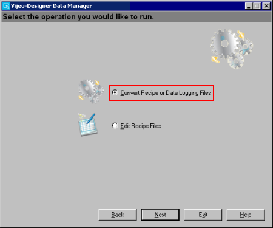
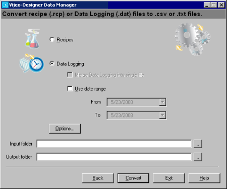

|
|
|
|
|
|
|
|
Data Manager can convert data logging files (.dat) and recipe files (.rcp) into .csv or .txt files.
When converting recipe files, you may be required to type in the recipe's Project Identifier. For more information, see Recipe Project Identifier in Section 20.5.2.7, Data Manager Password Security.
Start Data Manager.
In the Windows Start menu, point to Programs, Schneider Electric, Vijeo-Designer‚ Tools Data Manager, and click Vijeo-Designer Data Manager.
On the main page, use the Media drop-down list to select Local Files and then click Next.

Select Convert Recipe or Data Logging Files and click Next.

In the window to convert files, configure the conversion settings as required. The table below describes the conversion property settings.

|
Property |
Description |
|
File Types |
Select the file type for the Data Manager to convert
|
|
Merge Data Logging data into Single File |
Available only when Data Logging is selected. When selected, the Data Logging files (.dat) for each variable on the target are merged into a single file during conversion. This property is enabled when the Build Tree property in the Data Manager Options dialog box is disabled. This property is disabled when the Build Tree property is enabled. |
|
Use Date Range |
Available only when Data Logging is selected. When selected, Data Manager converts only the Data Logging files that were created within the specified date range. Specify the date range using the From and To fields. |
|
Options |
The Options button displays options for retrieving and converting files. See Section 20.5.2.6, Data Manager Options for Retrieving and Converting Files. |
|
Input Folder |
Specify the folder that contains the files to convert. Click the Input folder ellipsis button and use Windows Explorer to specify the Input folder. Alternatively, you can type the file path directly into the Input folder field. |
|
Output Folder |
Specify the output folder for the converted files. Click the ellipsis button and use the Windows Explorer to select the output folder. Alternatively, you can type the file path directly into the Output Folder field.
|
Click Convert to convert the files.
The Data Transfer Status window appears and shows the conversion status. For more information on the Data Transfer Status window, see Section 20.5.2.8, Data Transfer Status.